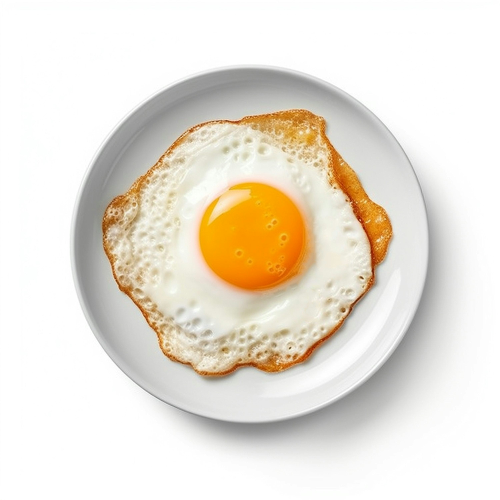

Home
Fried Egg:

Easy, convenient, delicious way of making an Egg is to fry it which is really healthy as well. The receipe is straight forward and easy to follow so sharing it is simple!
Ingredients:
- Egg
- Cooking Oil
- Cooking Pan
- Salt
- Black Pepper
Steps:
- Turn the heat for the Pan
- Add half a spoon of Cooking oil
- Let it medium heat for 30seconds
- Crack the Egg and pour it in the Pan
- Wait until the egg white is cooked a bit brownish on the edges and the yolk is soft
- Turn off the heat
- Add a pinch of Salt and Black pepper
- Place it on a plate and enjoy it with Bread!